CODING AGENTS AS PIXEL WORLD MODELS
traex/DeepSeek-V4.1-Flash · common50_0011
点击播放 · 原生 RGB 像素
逐轮保存的候选
回放视频、检查图与代码变化。
每份候选均可单独播放。实际图片检查记录在下方工具轨迹中。
候选 01播放与检查图
点击播放 · 原生 RGB 像素

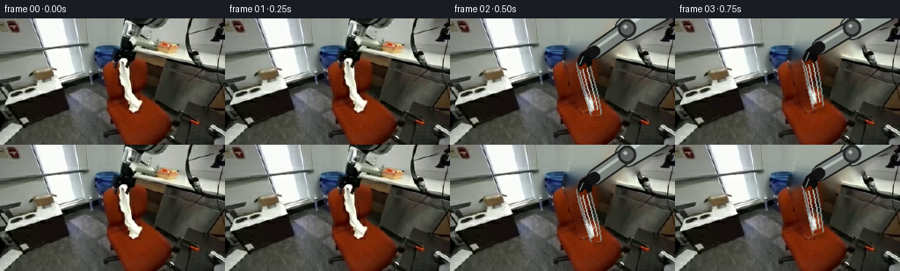
展开代码变化
--- 上一保存版本
+++ 本次保存版本
@@ -0,0 +1,294 @@
+from pathlib import Path
+
+import cv2
+import numpy as np
+from PIL import Image
+
+import artifact_io
+
+
+ROOT = Path(__file__).resolve().parent
+N_FRAMES = 20
+WIDTH = 256
+HEIGHT = 144
+FPS = 4
+
+
+def smoothstep(value):
+ value = np.clip(value, 0.0, 1.0)
+ return value * value * (3.0 - 2.0 * value)
+
+
+def keyframe_value(frame, keys):
+ if frame <= keys[0][0]:
+ return np.asarray(keys[0][1], dtype=np.float32)
+ if frame >= keys[-1][0]:
+ return np.asarray(keys[-1][1], dtype=np.float32)
+ for (f0, p0), (f1, p1) in zip(keys[:-1], keys[1:]):
+ if f0 <= frame <= f1:
+ amount = smoothstep((frame - f0) / max(1, f1 - f0))
+ return np.asarray(p0, np.float32) * (1.0 - amount) + np.asarray(p1, np.float32) * amount
+ return np.asarray(keys[-1][1], dtype=np.float32)
+
+
+def polygon_mask(points, shape):
+ mask = np.zeros(shape, np.uint8)
+ cv2.fillPoly(mask, [np.asarray(points, np.int32)], 255)
+ return mask
+
+
+def make_background(first):
+ b, g, r = cv2.split(first)
+ hsv = cv2.cvtColor(first, cv2.COLOR_BGR2HSV)
+
+ cloth_roi = np.zeros(first.shape[:2], np.uint8)
+ cloth_roi[48:122, 133:185] = 255
+ cloth_color = (
+ ((hsv[:, :, 1] < 118) & (hsv[:, :, 2] > 58))
+ | (
+ (np.abs(b.astype(np.int16) - g.astype(np.int16)) < 36)
+ & (np.abs(g.astype(np.int16) - r.astype(np.int16)) < 54)
+ & (hsv[:, :, 2] > 54)
+ )
+ )
+ cloth = np.where((cloth_roi > 0) & cloth_color, 255, 0).astype(np.uint8)
+ cloth = cv2.morphologyEx(cloth, cv2.MORPH_CLOSE, np.ones((3, 3), np.uint8))
+
+ arm = polygon_mask(
+ [
+ [122, 0], [231, 0], [231, 13], [219, 24], [212, 32], [202, 42],
+ [190, 39], [183, 49], [180, 58], [171, 61], [159, 62], [152, 56],
+ [145, 54], [138, 59], [131, 54], [131, 44], [135, 31], [137, 20],
+ [142, 8],
+ ],
+ first.shape[:2],
+ )
+ mask = cv2.bitwise_or(cloth, arm)
+ mask = cv2.dilate(mask, np.ones((3, 3), np.uint8), iterations=1)
+
+ plate = cv2.inpaint(first, mask, 11, cv2.INPAINT_TELEA)
+ # Feather the repair boundary so the fixed camera plate stays quiet.
+ soft = cv2.GaussianBlur(mask, (0, 0), 2.0).astype(np.float32) / 255.0
+ plate = (
+ first.astype(np.float32) * (1.0 - soft[..., None])
+ + plate.astype(np.float32) * soft[..., None]
+ ).clip(0, 255).astype(np.uint8)
+ return plate
+
+
+def capsule_layer(canvas, p0, p1, radius, color, edge=None, highlight=None):
+ p0 = tuple(np.round(p0).astype(int))
+ p1 = tuple(np.round(p1).astype(int))
+ if edge is not None:
+ cv2.line(canvas, p0, p1, edge, radius * 2 + 3, cv2.LINE_AA)
+ cv2.circle(canvas, p0, radius + 1, edge, -1, cv2.LINE_AA)
+ cv2.circle(canvas, p1, radius + 1, edge, -1, cv2.LINE_AA)
+ cv2.line(canvas, p0, p1, color, radius * 2, cv2.LINE_AA)
+ cv2.circle(canvas, p0, radius, color, -1, cv2.LINE_AA)
+ cv2.circle(canvas, p1, radius, color, -1, cv2.LINE_AA)
+ if highlight is not None:
+ direction = np.asarray(p1, np.float32) - np.asarray(p0, np.float32)
+ length = max(1.0, float(np.linalg.norm(direction)))
+ normal = np.array([-direction[1], direction[0]], np.float32) / length
+ offset = normal * max(2.0, radius * 0.36)
+ a = np.asarray(p0, np.float32) + offset
+ b = np.asarray(p1, np.float32) + offset
+ cv2.line(canvas, tuple(np.round(a).astype(int)), tuple(np.round(b).astype(int)),
+ highlight, max(1, radius // 3), cv2.LINE_AA)
+
+
+def cubic_bezier(p0, p1, p2, p3, count=52):
+ t = np.linspace(0.0, 1.0, count, dtype=np.float32)[:, None]
+ omt = 1.0 - t
+ points = (
+ omt ** 3 * p0
+ + 3.0 * omt ** 2 * t * p1
+ + 3.0 * omt * t ** 2 * p2
+ + t ** 3 * p3
+ )
+ return points
+
+
+def cloth_curve(attach, tip, bulge, width_scale=1.0):
+ attach = np.asarray(attach, np.float32)
+ tip = np.asarray(tip, np.float32)
+ delta = tip - attach
+ length = max(1.0, float(np.linalg.norm(delta)))
+ normal = np.array([-delta[1], delta[0]], np.float32) / length
+ p1 = attach + delta * 0.28 + normal * bulge[0]
+ p2 = attach + delta * 0.72 + normal * bulge[1]
+ points = cubic_bezier(attach, p1, p2, tip)
+ s = np.linspace(0.0, 1.0, len(points), dtype=np.float32)
+ widths = width_scale * (14.5 - 3.2 * s + 1.5 * np.sin(np.pi * s))
+ return points, widths
+
+
+def draw_cloth(canvas, attach, tip, bulge, width_scale=1.0, shadow=True, texture=None):
+ points, widths = cloth_curve(attach, tip, bulge, width_scale)
+ tangents = np.gradient(points, axis=0)
+ tangents /= np.maximum(1e-3, np.linalg.norm(tangents, axis=1, keepdims=True))
+ normals = np.stack([-tangents[:, 1], tangents[:, 0]], axis=1)
+ left = points + normals * widths[:, None] * 0.5
+ right = points - normals * widths[:, None] * 0.5
+ polygon = np.vstack([left, right[::-1]]).astype(np.int32)
+
+ if shadow:
+ shadow_mask = np.zeros(canvas.shape[:2], np.uint8)
+ shifted = (polygon + np.array([4, 5], np.int32)).astype(np.int32)
+ cv2.fillPoly(shadow_mask, [shifted], 255)
+ shadow_mask = cv2.GaussianBlur(shadow_mask, (0, 0), 2.1)
+ alpha = (shadow_mask.astype(np.float32) / 255.0) * 0.34
+ shade = canvas.astype(np.float32) * 0.54
+ canvas[:] = (
+ canvas.astype(np.float32) * (1.0 - alpha[..., None])
+ + shade * alpha[..., None]
+ ).clip(0, 255).astype(np.uint8)
+
+ cv2.fillPoly(canvas, [polygon], (207, 211, 197), cv2.LINE_AA)
+
+ # Reuse the real cloth's pale fabric texture, compressed into the ribbon.
+ for index in range(len(points) - 1):
+ v = index / max(1, len(points) - 1)
+ left_a, left_b = left[index], left[index + 1]
+ right_a, right_b = right[index], right[index + 1]
+ for j in range(4):
+ u = (j + 0.5) / 4.0
+ tex_x = int(8 + u * (texture.shape[1] - 17))
+ tex_y = int(v * (texture.shape[0] - 1))
+ y0 = max(0, tex_y - 1)
+ y1 = min(texture.shape[0], tex_y + 2)
+ x0 = max(0, tex_x - 2)
+ x1 = min(texture.shape[1], tex_x + 3)
+ base = texture[y0:y1, x0:x1].reshape(-1, 3).mean(axis=0)
+ light = 0.91 + 0.17 * (1.0 - abs(u - 0.35))
+ color = tuple(np.clip(base * light, 0, 255).astype(int).tolist())
+ quad = np.array(
+ [
+ left_a + (right_a - left_a) * (j / 4.0),
+ left_b + (right_b - left_b) * (j / 4.0),
+ left_b + (right_b - left_b) * ((j + 1) / 4.0),
+ left_a + (right_a - left_a) * ((j + 1) / 4.0),
+ ],
+ np.int32,
+ )
+ cv2.fillConvexPoly(canvas, quad, color, cv2.LINE_AA)
+
+ cv2.polylines(canvas, [left.astype(np.int32)], False, (147, 151, 137), 1, cv2.LINE_AA)
+ cv2.polylines(canvas, [right.astype(np.int32)], False, (157, 160, 145), 1, cv2.LINE_AA)
+
+ for offset in (-0.23, 0.12, 0.36):
+ ridge = points + normals * widths[:, None] * offset
+ ridge = ridge[7:-5].astype(np.int32)
+ if len(ridge) > 2:
+ shade = (225, 227, 214) if offset < 0.2 else (178, 181, 168)
+ cv2.polylines(canvas, [ridge], False, shade, 1, cv2.LINE_AA)
+
+
+def draw_arm(canvas, grip):
+ grip = np.asarray(grip, np.float32)
+ elbow = np.array([207.0 + 0.12 * (grip[0] - 207.0), 7.0 + 0.10 * (grip[1] - 7.0)], np.float32)
+ wrist = grip + np.array([11.0, -7.0], np.float32)
+ shoulder = np.array([242.0, -12.0], np.float32)
+
+ # A soft cast shadow keeps the arm attached to the fixed scene.
+ shadow = np.zeros(canvas.shape[:2], np.uint8)
+ cv2.line(shadow, tuple(np.round(shoulder + [4, 5]).astype(int)),
+ tuple(np.round(elbow + [4, 5]).astype(int)), 255, 25, cv2.LINE_AA)
+ cv2.line(shadow, tuple(np.round(elbow + [4, 5]).astype(int)),
+ tuple(np.round(wrist + [4, 5]).astype(int)), 255, 16, cv2.LINE_AA)
+ shadow = cv2.GaussianBlur(shadow, (0, 0), 2.0)
+ alpha = (shadow.astype(np.float32) / 255.0) * 0.28
+ canvas[:] = (
+ canvas.astype(np.float32) * (1.0 - alpha[..., None])
+ + canvas.astype(np.float32) * 0.50 * alpha[..., None]
+ ).clip(0, 255).astype(np.uint8)
+
+ capsule_layer(canvas, shoulder, elbow, 12, (149, 153, 145), (31, 33, 31), (202, 205, 195))
+ capsule_layer(canvas, elbow, wrist, 7, (121, 126, 120), (28, 29, 27), (181, 185, 177))
+
+ cv2.circle(canvas, tuple(np.round(elbow).astype(int)), 10, (37, 39, 37), -1, cv2.LINE_AA)
+ cv2.circle(canvas, tuple(np.round(elbow).astype(int)), 7, (91, 95, 90), -1, cv2.LINE_AA)
+ cv2.circle(canvas, tuple(np.round(elbow + [-2, -2]).astype(int)), 2, (177, 181, 172), -1, cv2.LINE_AA)
+
+ wrist_i = tuple(np.round(wrist).astype(int))
+ grip_i = tuple(np.round(grip).astype(int))
+ cv2.line(canvas, wrist_i, grip_i, (17, 18, 17), 12, cv2.LINE_AA)
+ cv2.circle(canvas, grip_i, 6, (12, 13, 12), -1, cv2.LINE_AA)
+
+ # Two rigid black fingers around the cloth's top edge.
+ finger_left = np.array([grip[0] - 5.0, grip[1] + 7.0], np.float32)
+ finger_right = np.array([grip[0] + 5.0, grip[1] + 7.0], np.float32)
+ cv2.line(canvas, tuple(np.round(grip + [-4, 2]).astype(int)),
+ tuple(np.round(finger_left).astype(int)), (8, 9, 8), 5, cv2.LINE_AA)
+ cv2.line(canvas, tuple(np.round(grip + [4, 2]).astype(int)),
+ tuple(np.round(finger_right).astype(int)), (8, 9, 8), 5, cv2.LINE_AA)
+ cv2.line(canvas, tuple(np.round(grip + [-2, -1]).astype(int)),
+ tuple(np.round(finger_left + [-1, 1]).astype(int)), (122, 126, 120), 1, cv2.LINE_AA)
+
+
+def make_frames(first):
+ plate = make_background(first)
+ texture = first[52:112, 141:179].copy()
+ grip_keys = [
+ (2, [153, 44]), (4, [154, 35]), (7, [184, 33]),
+ (10, [203, 41]), (12, [208, 53]), (14, [203, 62]),
+ (16, [214, 52]), (19, [232, 35]),
+ ]
+ tip_keys = [
+ (2, [166, 110]), (4, [160, 92]), (7, [197, 77]),
+ (10, [226, 58]), (12, [222, 64]), (14, [208, 71]),
+ (16, [200, 70]), (19, [199, 70]),
+ ]
+ bulge_keys = [
+ (2, [2.0, -2.0]), (4, [-4.0, 2.0]), (7, [3.0, 8.0]),
+ (10, [2.0, 5.0]), (12, [0.0, 2.0]), (14, [-1.0, 1.0]),
+ (16, [0.0, 0.0]), (19, [0.0, 0.0]),
+ ]
+ rest_keys = [
+ (16, [192, 62]), (19, [192, 62]),
+ ]
+ rest_tip_keys = [
+ (16, [224, 67]), (19, [224, 67]),
+ ]
+
+ frames = []
+ for index in range(N_FRAMES):
+ if index <= 1:
+ frames.append(first.copy())
+ continue
+
+ frame = plate.copy()
+ grip = keyframe_value(index, grip_keys)
+ tip = keyframe_value(index, tip_keys)
+ bulge = keyframe_value(index, bulge_keys)
+ released = index >= 16
+
+ if released:
+ rest = keyframe_value(index, rest_keys)
+ rest_tip = keyframe_value(index, rest_tip_keys)
+ draw_cloth(frame, rest, rest_tip, [0.0, 0.0], width_scale=0.80,
+ shadow=True, texture=texture)
+ draw_arm(frame, grip)
+ else:
+ attach = grip + np.array([-1.5, 6.0], np.float32)
+ draw_cloth(frame, attach, tip, bulge, width_scale=1.0,
+ shadow=True, texture=texture)
+ draw_arm(frame, grip)
+
+ frames.append(frame)
+ return np.stack(frames).astype(np.uint8)
+
+
+def main():
+ first = np.asarray(Image.open(ROOT / "first_frame.png").convert("RGB"))
+ if first.shape != (HEIGHT, WIDTH, 3):
+ raise ValueError(f"Unexpected first-frame shape: {first.shape}")
+ first_bgr = cv2.cvtColor(first, cv2.COLOR_RGB2BGR)
+ frames_bgr = make_frames(first_bgr)
+ frames = np.stack([cv2.cvtColor(frame, cv2.COLOR_BGR2RGB) for frame in frames_bgr])
+ frames[0] = first
+ artifact_io.save(frames, ROOT)
+
+
+if __name__ == "__main__":
+ main()
候选 02播放与检查图
点击播放 · 原生 RGB 像素
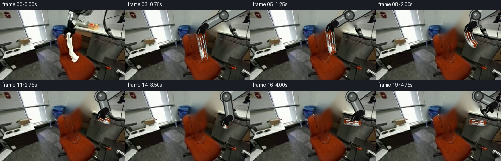
展开代码变化
--- 上一保存版本
+++ 本次保存版本
@@ -76,25 +76,44 @@
return plate
-def capsule_layer(canvas, p0, p1, radius, color, edge=None, highlight=None):
- p0 = tuple(np.round(p0).astype(int))
- p1 = tuple(np.round(p1).astype(int))
- if edge is not None:
- cv2.line(canvas, p0, p1, edge, radius * 2 + 3, cv2.LINE_AA)
- cv2.circle(canvas, p0, radius + 1, edge, -1, cv2.LINE_AA)
- cv2.circle(canvas, p1, radius + 1, edge, -1, cv2.LINE_AA)
- cv2.line(canvas, p0, p1, color, radius * 2, cv2.LINE_AA)
- cv2.circle(canvas, p0, radius, color, -1, cv2.LINE_AA)
- cv2.circle(canvas, p1, radius, color, -1, cv2.LINE_AA)
- if highlight is not None:
- direction = np.asarray(p1, np.float32) - np.asarray(p0, np.float32)
- length = max(1.0, float(np.linalg.norm(direction)))
- normal = np.array([-direction[1], direction[0]], np.float32) / length
- offset = normal * max(2.0, radius * 0.36)
- a = np.asarray(p0, np.float32) + offset
- b = np.asarray(p1, np.float32) + offset
- cv2.line(canvas, tuple(np.round(a).astype(int)), tuple(np.round(b).astype(int)),
- highlight, max(1, radius // 3), cv2.LINE_AA)
+def make_arm_sprite(first):
+ polygon = polygon_mask(
+ [
+ [124, 0], [231, 0], [231, 13], [219, 24], [212, 32], [202, 42],
+ [190, 39], [183, 49], [180, 58], [171, 61], [159, 62], [152, 56],
+ [145, 54], [138, 59], [131, 54], [131, 44], [135, 31], [137, 20],
+ [142, 8],
+ ],
+ first.shape[:2],
+ )
+ hsv = cv2.cvtColor(first, cv2.COLOR_BGR2HSV)
+ # Keep the rigid upper structure, and only the darker gripper pixels below
+ # it so the source cloth does not become part of the arm.
+ yy = np.arange(first.shape[0])[:, None]
+ lower_dark = (hsv[:, :, 2] < 172) | (hsv[:, :, 1] > 65)
+ mask = np.where((polygon > 0) & ((yy < 29) | lower_dark), 255, 0).astype(np.uint8)
+ mask = cv2.morphologyEx(mask, cv2.MORPH_CLOSE, np.ones((3, 3), np.uint8))
+
+ ys, xs = np.where(mask > 0)
+ box = (xs.min(), ys.min(), xs.max() + 1, ys.max() + 1)
+ return (
+ first[box[1]:box[3], box[0]:box[2]].copy(),
+ mask[box[1]:box[3], box[0]:box[2]].copy(),
+ box,
+ )
+
+
+def make_cloth_texture(first):
+ crop = first[52:112, 139:180].copy()
+ b, g, r = cv2.split(crop)
+ orange = (
+ (r.astype(np.int16) > g.astype(np.int16) + 19)
+ & (r.astype(np.int16) > b.astype(np.int16) + 24)
+ & (r > 40)
+ )
+ orange_mask = cv2.dilate(orange.astype(np.uint8) * 255, np.ones((3, 3), np.uint8))
+ clean = cv2.inpaint(crop, orange_mask, 5, cv2.INPAINT_TELEA)
+ return cv2.resize(clean, (32, 72), interpolation=cv2.INTER_LINEAR)
def cubic_bezier(p0, p1, p2, p3, count=52):
@@ -119,7 +138,7 @@
p2 = attach + delta * 0.72 + normal * bulge[1]
points = cubic_bezier(attach, p1, p2, tip)
s = np.linspace(0.0, 1.0, len(points), dtype=np.float32)
- widths = width_scale * (14.5 - 3.2 * s + 1.5 * np.sin(np.pi * s))
+ widths = width_scale * (16.0 - 3.0 * s + 1.8 * np.sin(np.pi * s))
return points, widths
@@ -144,95 +163,85 @@
+ shade * alpha[..., None]
).clip(0, 255).astype(np.uint8)
- cv2.fillPoly(canvas, [polygon], (207, 211, 197), cv2.LINE_AA)
-
- # Reuse the real cloth's pale fabric texture, compressed into the ribbon.
+ cv2.fillPoly(canvas, [polygon], (204, 207, 191), cv2.LINE_AA)
+
+ # Map photographed fabric into the curved ribbon. The geometry changes,
+ # while the source highlights and compression texture remain intact.
+ columns = 10
for index in range(len(points) - 1):
v = index / max(1, len(points) - 1)
- left_a, left_b = left[index], left[index + 1]
- right_a, right_b = right[index], right[index + 1]
- for j in range(4):
- u = (j + 0.5) / 4.0
- tex_x = int(8 + u * (texture.shape[1] - 17))
- tex_y = int(v * (texture.shape[0] - 1))
- y0 = max(0, tex_y - 1)
- y1 = min(texture.shape[0], tex_y + 2)
- x0 = max(0, tex_x - 2)
- x1 = min(texture.shape[1], tex_x + 3)
- base = texture[y0:y1, x0:x1].reshape(-1, 3).mean(axis=0)
- light = 0.91 + 0.17 * (1.0 - abs(u - 0.35))
+ for j in range(columns):
+ u0 = j / columns
+ u1 = (j + 1) / columns
+ uc = 0.5 * (u0 + u1)
+ tex_x = int(np.clip(uc * (texture.shape[1] - 1), 0, texture.shape[1] - 1))
+ tex_y = int(np.clip((0.06 + 0.86 * v) * (texture.shape[0] - 1),
+ 0, texture.shape[0] - 1))
+ base = texture[tex_y, tex_x].astype(np.float32)
+ light = 0.82 + 0.25 * np.cos((uc - 0.38) * np.pi * 1.3)
+ light += 0.045 * np.sin(v * np.pi * 8.0 + uc * 3.0)
color = tuple(np.clip(base * light, 0, 255).astype(int).tolist())
quad = np.array(
[
- left_a + (right_a - left_a) * (j / 4.0),
- left_b + (right_b - left_b) * (j / 4.0),
- left_b + (right_b - left_b) * ((j + 1) / 4.0),
- left_a + (right_a - left_a) * ((j + 1) / 4.0),
+ left[index] + (right[index] - left[index]) * u0,
+ left[index + 1] + (right[index + 1] - left[index + 1]) * u0,
+ left[index + 1] + (right[index + 1] - left[index + 1]) * u1,
+ left[index] + (right[index] - left[index]) * u1,
],
np.int32,
)
cv2.fillConvexPoly(canvas, quad, color, cv2.LINE_AA)
- cv2.polylines(canvas, [left.astype(np.int32)], False, (147, 151, 137), 1, cv2.LINE_AA)
- cv2.polylines(canvas, [right.astype(np.int32)], False, (157, 160, 145), 1, cv2.LINE_AA)
+ cv2.polylines(canvas, [left.astype(np.int32)], False, (137, 142, 128), 1, cv2.LINE_AA)
+ cv2.polylines(canvas, [right.astype(np.int32)], False, (149, 153, 138), 1, cv2.LINE_AA)
for offset in (-0.23, 0.12, 0.36):
ridge = points + normals * widths[:, None] * offset
ridge = ridge[7:-5].astype(np.int32)
if len(ridge) > 2:
- shade = (225, 227, 214) if offset < 0.2 else (178, 181, 168)
+ shade = (229, 231, 218) if offset < 0.2 else (173, 177, 163)
cv2.polylines(canvas, [ridge], False, shade, 1, cv2.LINE_AA)
-def draw_arm(canvas, grip):
+def draw_arm(canvas, grip, sprite, alpha, box):
grip = np.asarray(grip, np.float32)
- elbow = np.array([207.0 + 0.12 * (grip[0] - 207.0), 7.0 + 0.10 * (grip[1] - 7.0)], np.float32)
- wrist = grip + np.array([11.0, -7.0], np.float32)
- shoulder = np.array([242.0, -12.0], np.float32)
-
- # A soft cast shadow keeps the arm attached to the fixed scene.
- shadow = np.zeros(canvas.shape[:2], np.uint8)
- cv2.line(shadow, tuple(np.round(shoulder + [4, 5]).astype(int)),
- tuple(np.round(elbow + [4, 5]).astype(int)), 255, 25, cv2.LINE_AA)
- cv2.line(shadow, tuple(np.round(elbow + [4, 5]).astype(int)),
- tuple(np.round(wrist + [4, 5]).astype(int)), 255, 16, cv2.LINE_AA)
- shadow = cv2.GaussianBlur(shadow, (0, 0), 2.0)
- alpha = (shadow.astype(np.float32) / 255.0) * 0.28
+ source_grip = np.array([154.0, 44.0], np.float32)
+ shift = grip - source_grip
+ height, width = canvas.shape[:2]
+ yy, xx = np.mgrid[0:height, 0:width].astype(np.float32)
+ weight = smoothstep((yy - 5.0) / 39.0)
+ source_x = (xx - shift[0] * weight - box[0]).astype(np.float32)
+ source_y = (yy - shift[1] * weight - box[1]).astype(np.float32)
+
+ warped = cv2.remap(sprite, source_x, source_y,
+ cv2.INTER_LINEAR, borderMode=cv2.BORDER_CONSTANT, borderValue=0)
+ warped_alpha = cv2.remap(alpha, source_x, source_y,
+ cv2.INTER_LINEAR, borderMode=cv2.BORDER_CONSTANT, borderValue=0)
+ warped_alpha = cv2.GaussianBlur(warped_alpha, (0, 0), 0.45).astype(np.float32) / 255.0
+
+ shadow_mask = np.roll(np.roll((warped_alpha * 255).astype(np.uint8), 4, axis=0),
+ 3, axis=1)
+ shadow_mask = cv2.GaussianBlur(shadow_mask, (0, 0), 2.4)
+ shadow_alpha = (shadow_mask.astype(np.float32) / 255.0) * 0.23
canvas[:] = (
- canvas.astype(np.float32) * (1.0 - alpha[..., None])
- + canvas.astype(np.float32) * 0.50 * alpha[..., None]
+ canvas.astype(np.float32) * (1.0 - shadow_alpha[..., None])
+ + canvas.astype(np.float32) * 0.55 * shadow_alpha[..., None]
).clip(0, 255).astype(np.uint8)
- capsule_layer(canvas, shoulder, elbow, 12, (149, 153, 145), (31, 33, 31), (202, 205, 195))
- capsule_layer(canvas, elbow, wrist, 7, (121, 126, 120), (28, 29, 27), (181, 185, 177))
-
- cv2.circle(canvas, tuple(np.round(elbow).astype(int)), 10, (37, 39, 37), -1, cv2.LINE_AA)
- cv2.circle(canvas, tuple(np.round(elbow).astype(int)), 7, (91, 95, 90), -1, cv2.LINE_AA)
- cv2.circle(canvas, tuple(np.round(elbow + [-2, -2]).astype(int)), 2, (177, 181, 172), -1, cv2.LINE_AA)
-
- wrist_i = tuple(np.round(wrist).astype(int))
- grip_i = tuple(np.round(grip).astype(int))
- cv2.line(canvas, wrist_i, grip_i, (17, 18, 17), 12, cv2.LINE_AA)
- cv2.circle(canvas, grip_i, 6, (12, 13, 12), -1, cv2.LINE_AA)
-
- # Two rigid black fingers around the cloth's top edge.
- finger_left = np.array([grip[0] - 5.0, grip[1] + 7.0], np.float32)
- finger_right = np.array([grip[0] + 5.0, grip[1] + 7.0], np.float32)
- cv2.line(canvas, tuple(np.round(grip + [-4, 2]).astype(int)),
- tuple(np.round(finger_left).astype(int)), (8, 9, 8), 5, cv2.LINE_AA)
- cv2.line(canvas, tuple(np.round(grip + [4, 2]).astype(int)),
- tuple(np.round(finger_right).astype(int)), (8, 9, 8), 5, cv2.LINE_AA)
- cv2.line(canvas, tuple(np.round(grip + [-2, -1]).astype(int)),
- tuple(np.round(finger_left + [-1, 1]).astype(int)), (122, 126, 120), 1, cv2.LINE_AA)
+ canvas[:] = (
+ canvas.astype(np.float32) * (1.0 - warped_alpha[..., None])
+ + warped.astype(np.float32) * warped_alpha[..., None]
+ ).clip(0, 255).astype(np.uint8)
def make_frames(first):
plate = make_background(first)
- texture = first[52:112, 141:179].copy()
+ arm_sprite, arm_alpha, arm_box = make_arm_sprite(first)
+ texture = make_cloth_texture(first)
grip_keys = [
- (2, [153, 44]), (4, [154, 35]), (7, [184, 33]),
- (10, [203, 41]), (12, [208, 53]), (14, [203, 62]),
- (16, [214, 52]), (19, [232, 35]),
+ (2, [154, 44]), (4, [157, 34]), (7, [184, 32]),
+ (10, [202, 42]), (12, [207, 53]), (14, [203, 61]),
+ (16, [215, 51]), (19, [231, 31]),
]
tip_keys = [
(2, [166, 110]), (4, [160, 92]), (7, [197, 77]),
@@ -268,12 +277,12 @@
rest_tip = keyframe_value(index, rest_tip_keys)
draw_cloth(frame, rest, rest_tip, [0.0, 0.0], width_scale=0.80,
shadow=True, texture=texture)
- draw_arm(frame, grip)
+ draw_arm(frame, grip, arm_sprite, arm_alpha, arm_box)
else:
attach = grip + np.array([-1.5, 6.0], np.float32)
draw_cloth(frame, attach, tip, bulge, width_scale=1.0,
shadow=True, texture=texture)
- draw_arm(frame, grip)
+ draw_arm(frame, grip, arm_sprite, arm_alpha, arm_box)
frames.append(frame)
return np.stack(frames).astype(np.uint8)
候选 03播放与检查图

可观测工具轨迹
实际执行的命令与返回图片。
命令 1exit 0
/bin/bash -c "pwd && rg --files -g '"'!*.git*'"' | sed -n '1,160p'"
命令 2exit 0
/bin/bash -c "sed -n '1,240p' prompt.txt"
命令 3exit 0
/bin/bash -c "sed -n '1,280p' GENERATION_RULES.md"
命令 4exit 0
/bin/bash -c 'file first_frame.png && identify first_frame.png 2>/dev/null || true && ls -la'
命令 5exit 0
/bin/bash -c "sed -n '1,260p' artifact_io.py"
命令 6exit 0
/bin/bash -c 'cat task_spec.json'
命令 7exit 0
/bin/bash -c "sed -n '1,260p' player_template.html"
命令 8exit 0
/bin/bash -c "python - <<'PY'
from PIL import Image
im=Image.open('first_frame.png')
print(im.mode, im.size)
PY"命令 9exit 0
/bin/bash -c "python - <<'PY' mods=['numpy','PIL','cv2','scipy','skimage'] for m in mods: try: mod=__import__(m); print(m, getattr(mod,'__version__','ok')) except Exception as e: print(m, 'MISSING', e) PY"
命令 10exit 0
/bin/bash -c "python - <<'PY'
from PIL import Image
im=Image.open('first_frame.png')
im.resize((1024,576)).save('.tmp/zoom.png')
PY"命令 11exit 0
/bin/bash -c "python - <<'PY'
from PIL import Image
im=Image.open('first_frame.png')
# nearest and lanczos crops
for name,box in [('arm',(110,0,220,75)),('cloth',(115,45,185,120)),('chair',(110,55,200,144)),('counter',(175,30,256,95))]:
c=im.crop(box)
c.resize((c.width*8,c.height*8),Image.Resampling.NEAREST).save(f'.tmp/{name}_nearest.png')
c.resize((c.width*8,c.height*8),Image.Resampling.LANCZOS).save(f'.tmp/{name}_lanczos.png')
PY"命令 12exit 0
/bin/bash -c "python - <<'PY'
import cv2, numpy as np
im=cv2.imread('first_frame.png')
hsv=cv2.cvtColor(im,cv2.COLOR_BGR2HSV)
roi=np.zeros(im.shape[:2],np.uint8); roi[45:122,138:188]=255
# cloth pale: low sat and bright
for i,(s,v) in enumerate([(90,85),(75,100),(110,90),(60,110)]):
m=((hsv[:,:,1]<s)&(hsv[:,:,2]>v)&(roi>0)).astype(np.uint8)*255
m=cv2.morphologyEx(m,cv2.MORPH_CLOSE,np.ones((3,3),np.uint8))
# comps
n,l,st,c=cv2.connectedComponentsWithStats(m)
out=np.zeros_like(m)
for j in range(1,n):
if st[j,cv2.CC_STAT_AREA]>80: out[l==j]=255
vis=im.copy(); vis[out>0]=(0.35*vis[out>0]+0.65*np.array([0,0,255])).astype(np.uint8)
cv2.imwrite(f'.tmp/mask{i}.png',vis)
print(i,st[1:])
PY"命令 13exit 0
/bin/bash -c "python - <<'PY'
import cv2, numpy as np
im=cv2.imread('first_frame.png'); hsv=cv2.cvtColor(im,cv2.COLOR_BGR2HSV)
# mask cloth including pale + dark shadow-ish, only in polygon-ish x 134-185 y 38-118, using color and spatial
mask=((hsv[:,:,1]<120)&(hsv[:,:,2]>75)).astype(np.uint8)*255
roi=np.zeros(mask.shape,np.uint8); roi[38:118,133:185]=255
mask=cv2.bitwise_and(mask,roi)
# add likely shadow around x137-182 y51-112? only darker but avoid gripper; hand region y<48
mask=cv2.morphologyEx(mask,cv2.MORPH_CLOSE,np.ones((3,3),np.uint8))
mask=cv2.dilate(mask,np.ones((5,5),np.uint8),iterations=1)
# remove below y112 mostly
for rad in [3,5,8]:
bg=cv2.inpaint(im,mask,rad,cv2.INPAINT_TELEA)
cv2.imwrite(f'.tmp/bg{rad}.png',bg)
PY"命令 14exit 0
/bin/bash -c "python - <<'PY'
import cv2,numpy as np
im=cv2.imread('first_frame.png')
mask=np.zeros(im.shape[:2],np.uint8)
# full arm+cloth region polygon manually
poly=np.array([[124,0],[231,0],[227,20],[211,31],[201,41],[188,39],[174,50],[177,75],[177,116],[135,117],[135,70],[139,52],[137,37],[145,21]],np.int32)
cv2.fillPoly(mask,[poly],255)
for rad in [3,7,12]:
bg=cv2.inpaint(im,mask,rad,cv2.INPAINT_TELEA)
cv2.imwrite(f'.tmp/allbg{rad}.png',bg)
cv2.imwrite('.tmp/allmask.png',mask)
PY"命令 15exit 0
/bin/bash -c "python - <<'PY'
from PIL import Image
im=Image.open('first_frame.png')
# rows sample colors / segmentation print runs for colors
import numpy as np
arr=np.array(im)
for y in [40,45,50,55,60,70,80,90,100,110,120,130,140]:
print('y',y, [(x,arr[y,x].tolist()) for x in [110,120,125,130,135,140,145,150,160,170,180,190,200,210,220,230,240]])
PY"命令 16exit 0
/bin/bash -c "python - <<'PY'
import cv2, numpy as np
im=cv2.imread('first_frame.png'); hsv=cv2.cvtColor(im,cv2.COLOR_BGR2HSV)
# crop cloth and create candidate masks
roi=np.zeros(im.shape[:2],np.uint8); roi[46:122,134:185]=255
conds={
'lowS':((hsv[:,:,1]<85)&(hsv[:,:,2]>80)),
'neutral':((np.abs(im[:,:,0].astype(int)-im[:,:,1].astype(int))<28)&(np.abs(im[:,:,1].astype(int)-im[:,:,2].astype(int))<45)&(hsv[:,:,2]>65)),
'comb':(((hsv[:,:,1]<100)&(hsv[:,:,2]>75))|((np.abs(im[:,:,0].astype(int)-im[:,:,1].astype(int))<20)&(np.abs(im[:,:,1].astype(int)-im[:,:,2].astype(int))<35)&(hsv[:,:,2]>60)))
}
for name,c in conds.items():
m=(c&(roi>0)).astype(np.uint8)*255
m=cv2.morphologyEx(m,cv2.MORPH_CLOSE,np.ones((3,3),np.uint8))
# keep largest comps, remove small
n,l,st,cen=cv2.connectedComponentsWithStats(m)
out=np.zeros_like(m)
for j in range(1,n):
if st[j,cv2.CC_STAT_AREA]>30: out[l==j]=255
# expand a bit
out=cv2.dilate(out,np.ones((3,3),np.uint8),iterations=1)
vis=im.copy(); vis[out>0]=(0.3*vis[out>0]+0.7*np.array([255,0,255])).astype(np.uint8)
cv2.imwrite(f'.tmp/clothmask_{name}.png',vis)
print(name,'count',np.count_nonzero(out))
PY"命令 17exit 0
/bin/bash -c "python - <<'PY'
import cv2,numpy as np
im=cv2.imread('first_frame.png'); hsv=cv2.cvtColor(im,cv2.COLOR_BGR2HSV)
roi=np.zeros(im.shape[:2],np.uint8); roi[48:121,135:183]=255
c=((hsv[:,:,1]<120)&(hsv[:,:,2]>60))|((np.abs(im[:,:,0].astype(int)-im[:,:,1].astype(int))<35)&(np.abs(im[:,:,1].astype(int)-im[:,:,2].astype(int))<55)&(hsv[:,:,2]>55))
m=(c&(roi>0)).astype(np.uint8)*255
# manually exclude gripper y<52, preserve cloth tip etc
m[:52]=0
m=cv2.morphologyEx(m,cv2.MORPH_CLOSE,np.ones((5,5),np.uint8))
m=cv2.dilate(m,np.ones((3,3),np.uint8),iterations=1)
n,l,st,cen=cv2.connectedComponentsWithStats(m)
out=np.zeros_like(m)
for j in range(1,n):
if st[j,cv2.CC_STAT_AREA]>50: out[l==j]=255
# add explicit likely bottom triangle around x155-172 y104-113 based visual
poly=np.array([[151,100],[171,102],[168,113],[157,116],[147,110]],np.int32); cv2.fillPoly(out,[poly],255)
cv2.imwrite('.tmp/clothmask_broad.png',out)
vis=im.copy(); vis[out>0]=(0.3*vis[out>0]+0.7*np.array([255,0,255])).astype(np.uint8); cv2.imwrite('.tmp/clothmask_broad_vis.png',vis)
PY"命令 18exit 0
/bin/bash -c "python - <<'PY'
import cv2, numpy as np
im=cv2.imread('first_frame.png'); hsv=cv2.cvtColor(im,cv2.COLOR_BGR2HSV)
# Print a mask grid for ROI x132:184 y46:121, characters: W bright neutral, w shadow neutral, R orange
for y in range(46,121,2):
s=''
for x in range(132,185,2):
b,g,r=map(int,im[y,x]); h,sat,v=map(int,hsv[y,x])
if r>g+12 and r>b+18: ch='R'
elif max(b,g,r)<35: ch='K'
elif sat<95 and v>55: ch='W'
elif sat<150 and v>90: ch='w'
else: ch='.'
s+=ch
print(f'{y:3d} {s}')
PY"命令 19exit 0
/bin/bash -c "python - <<'PY'
import cv2,numpy as np
im=cv2.imread('first_frame.png'); hsv=cv2.cvtColor(im,cv2.COLOR_BGR2HSV)
m=np.zeros(im.shape[:2],np.uint8)
# polygon contour around cloth, follows left edge and broad right side
pts=np.array([[134,44],[153,44],[155,51],[146,53],[144,56],[144,95],[151,100],[159,108],[170,102],[176,78],[171,58],[173,54],[180,56],[181,72],[181,104],[173,117],[157,119],[147,112],[139,104],[135,88],[134,70]],np.int32)
cv2.fillPoly(m,[pts],255)
# exclude obvious orange based color within poly, but retain cloth whites/shadows; test variants
for variant in range(4):
mm=m.copy()
if variant>=1:
# clear strong orange only
orange=((im[:,:,2].astype(int)>im[:,:,1].astype(int)+30)&(im[:,:,2].astype(int)>im[:,:,0].astype(int)+30)&(hsv[:,:,2]>40))
mm[orange]=0
if variant>=2:
mm=cv2.morphologyEx(mm,cv2.MORPH_CLOSE,np.ones((3,3),np.uint8))
if variant>=3:
# preserve all non orange, add a few pixels around
mm=cv2.dilate(mm,np.ones((3,3),np.uint8),iterations=1)
cv2.imwrite(f'.tmp/poly{variant}.png',mm)
vis=im.copy(); vis[mm>0]=(0.35*vis[mm>0]+0.65*np.array([255,0,255])).astype(np.uint8); cv2.imwrite(f'.tmp/poly{variant}_vis.png',vis)
print(variant,np.count_nonzero(mm))
PY"命令 20exit 0
/bin/bash -c "python - <<'PY'
import cv2,numpy as np
im=cv2.imread('first_frame.png')
m=cv2.imread('.tmp/poly3.png',0)
# inpaint only chair/cloth, include some margin; use navier stokes and telea variants
for name,alg in [('telea',cv2.INPAINT_TELEA),('ns',cv2.INPAINT_NS)]:
for r in [3,7,15]:
bg=cv2.inpaint(im,m,r,alg)
cv2.imwrite(f'.tmp/polybg_{name}{r}.png',bg)
PY"命令 21exit 0
/bin/bash -c "python - <<'PY'
import cv2,numpy as np
im=cv2.imread('first_frame.png'); hsv=cv2.cvtColor(im,cv2.COLOR_BGR2HSV)
# manually build arm mask from color/non-chair in upper region, avoiding window
m=np.zeros(im.shape[:2],np.uint8)
# arm is gray/black around x124:232,y0:52 and gripper x130:183,y0:58. include polygon
poly=np.array([[123,0],[231,0],[230,13],[218,23],[211,31],[201,40],[188,38],[183,46],[177,53],[170,58],[158,58],[153,52],[146,52],[138,58],[132,52],[132,42],[136,30],[137,17],[143,6]],np.int32)
cv2.fillPoly(m,[poly],255)
# avoid strong window blues
# preserve only dark/gray/white; don't remove, inpaint later
# inpaint full arm
for name,alg in [('telea',cv2.INPAINT_TELEA),('ns',cv2.INPAINT_NS)]:
bg=cv2.inpaint(im,m,7,alg); cv2.imwrite(f'.tmp/armbg_{name}.png',bg)
cv2.imwrite('.tmp/armmask.png',m)
PY"命令 22exit 0
/bin/bash -c "python - <<'PY'
import cv2, numpy as np
im=cv2.imread('first_frame.png')
# print pixel clusters on arm region for color ranges
for y in [5,10,15,20,25,30,35,40,45,50]:
print('y',y,[(x, tuple(int(v) for v in im[y,x][::-1])) for x in range(124,231,8)])
PY"命令 23exit 0
/bin/bash -c "python - <<'PY'
import cv2,numpy as np
im=cv2.imread('first_frame.png'); hsv=cv2.cvtColor(im,cv2.COLOR_BGR2HSV)
# manual mask: white cloth including gray shadow, within a conservative silhouette. exclude gripper y<55.
m=np.zeros(im.shape[:2],np.uint8)
poly=np.array([[134,54],[154,54],[153,50],[145,52],[143,57],[143,93],[149,99],[155,106],[169,104],[176,83],[176,65],[171,57],[172,53],[180,56],[181,73],[181,103],[174,114],[160,117],[150,111],[142,102],[137,89],[135,70]],np.int32)
cv2.fillPoly(m,[poly],255)
# remove orange pixels from mask
b,g,r=cv2.split(im)
orange=((r.astype(int)>g.astype(int)+22)&(r.astype(int)>b.astype(int)+30)&(r>45))
m[orange]=0
# close holes and dilate slight
m=cv2.morphologyEx(m,cv2.MORPH_CLOSE,np.ones((3,3),np.uint8))
m=cv2.dilate(m,np.ones((3,3),np.uint8),iterations=1)
cv2.imwrite('.tmp/clothmask_final.png',m)
vis=im.copy(); vis[m>0]=(0.35*vis[m>0]+0.65*np.array([255,0,255])).astype(np.uint8); cv2.imwrite('.tmp/clothmask_final_vis.png',vis)
# inpaint, then compare
for alg in [cv2.INPAINT_TELEA,cv2.INPAINT_NS]:
for rad in [3,5,9,15]:
bg=cv2.inpaint(im,m,rad,alg); cv2.imwrite(f'.tmp/clothbg_{alg}_{rad}.png',bg)
PY"命令 24exit 0
/bin/bash -c "python - <<'PY'
import cv2,numpy as np
im=cv2.imread('first_frame.png')
m=cv2.imread('.tmp/clothmask_final.png',0)
# arm mask build manually based on pixels, rough polygon + exclude window. Need replace arm entirely with plausible counter/window background.
arm=np.zeros(im.shape[:2],np.uint8)
poly=np.array([[124,0],[231,0],[231,12],[219,23],[213,31],[202,41],[190,38],[183,48],[180,56],[171,60],[159,61],[153,55],[146,53],[139,58],[132,53],[131,44],[135,31],[137,20],[142,8]],np.int32)
cv2.fillPoly(arm,[poly],255)
# combine cloth mask
full=cv2.bitwise_or(m,arm)
# perhaps include actual arm right cable etc? yes polygon
# inpaint region - but window and counter background is simple; use telea radius 15
for rad in [7,15,30]:
bg=cv2.inpaint(im,full,rad,cv2.INPAINT_TELEA); cv2.imwrite(f'.tmp/emptybg_{rad}.png',bg)
cv2.imwrite('.tmp/empty_mask.png',full)
PY"命令 25exit 0
/bin/bash -c "python - <<'PY'
import cv2,numpy as np
im=cv2.imread('first_frame.png'); hsv=cv2.cvtColor(im,cv2.COLOR_BGR2HSV)
# print edge map coordinates of arm / object using sobel maybe inspect pixel groups
# Show high-res crop with grid labels? create enlarged image and mark coordinates
crop=im[:125,110:240]
crop=cv2.resize(crop,None,fx=5,fy=5,interpolation=cv2.INTER_NEAREST)
for x in range(0,crop.shape[1],25): cv2.line(crop,(x,0),(x,crop.shape[0]),(0,255,0),1)
for y in range(0,crop.shape[0],25): cv2.line(crop,(0,y),(crop.shape[1],y),(0,255,0),1)
cv2.imwrite('.tmp/grid.png',crop)
PY"命令 26exit 0
/bin/bash -c 'python generate.py'
命令 27exit 0
/bin/bash -c "python - <<'PY'
import cv2,numpy as np
im=cv2.imread('first_frame.png')
roi=im[0:75,110:240].copy()
mask=np.zeros(roi.shape[:2],np.uint8)
# rectangle around arm not cloth
poly=np.array([[13,0],[129,0],[129,18],[114,27],[101,36],[91,33],[75,38],[70,48],[57,53],[50,47],[37,52],[26,45],[21,35],[21,20],[25,8]],np.int32)
mask[:]=0
cv2.fillPoly(mask,[poly],cv2.GC_PR_FGD)
# definitely bg corners
mask[:3,:]=cv2.GC_BGD; mask[-3:,:]=cv2.GC_BGD; mask[:,:3]=cv2.GC_BGD; mask[:,-3:]=cv2.GC_BGD
bgd=np.zeros((1,65),np.float64); fgd=np.zeros((1,65),np.float64)
cv2.grabCut(roi,mask,None,bgd,fgd,5,cv2.GC_INIT_WITH_MASK)
out=((mask==cv2.GC_FGD)|(mask==cv2.GC_PR_FGD)).astype(np.uint8)*255
out=cv2.morphologyEx(out,cv2.MORPH_OPEN,np.ones((3,3),np.uint8))
vis=roi.copy(); vis[out>0]=(0.4*vis[out>0]+0.6*np.array([255,0,255])).astype(np.uint8)
cv2.imwrite('.tmp/grab_arm_vis.png',vis)
cv2.imwrite('.tmp/grab_arm_mask.png',out)
# full
fm=np.zeros(im.shape[:2],np.uint8); fm[0:75,110:240]=out; cv2.imwrite('.tmp/grab_arm_fullmask.png',fm)
PY"命令 28exit 0
/bin/bash -c "python - <<'PY'
import cv2,numpy as np
im=cv2.imread('first_frame.png')
m=np.zeros(im.shape[:2],np.uint8)
# separate upper support and gripper; union
polys=[
[[127,0],[231,0],[231,12],[221,20],[213,28],[206,35],[198,38],[190,36],[181,33],[174,31],[169,27],[163,22],[157,15],[151,8],[144,0]],
[[135,24],[173,25],[179,31],[180,39],[177,48],[172,55],[165,58],[154,57],[146,53],[139,48],[134,41],[132,32]],
]
for p in polys: cv2.fillPoly(m,[np.array(p,np.int32)],255)
# feather
vis=im.copy(); vis[m>0]=(0.3*vis[m>0]+0.7*np.array([255,0,255])).astype(np.uint8)
cv2.imwrite('.tmp/arm_manual_vis.png',vis)
cv2.imwrite('.tmp/arm_manual_mask.png',m)
# sprite transparent
spr=im.copy(); spr[m==0]=0; cv2.imwrite('.tmp/arm_sprite.png',spr)
PY"命令 29exit 0
/bin/bash -c "python - <<'PY'
import cv2,numpy as np
im=cv2.imread('first_frame.png')
# crop cloth original with alpha mask and preserve shadow? mask from final
m=cv2.imread('.tmp/clothmask_final.png',0)
spr=im.copy(); spr[m==0]=0
# Crop bounding box of mask, save upscaled
ys,xs=np.where(m>0); box=(xs.min(),ys.min(),xs.max()+1,ys.max()+1); print(box)
c=spr[box[1]:box[3],box[0]:box[2]]; a=m[box[1]:box[3],box[0]:box[2]]
rgba=np.dstack([c,a]); cv2.imwrite('.tmp/cloth_rgba.png',rgba)
cv2.imwrite('.tmp/cloth_sprite_zoom.png',cv2.resize(c,None,fx=8,fy=8,interpolation=cv2.INTER_NEAREST))
PY"命令 30exit 0
/bin/bash -c "python - <<'PY'
import cv2,numpy as np
im=cv2.imread('first_frame.png'); hsv=cv2.cvtColor(im,cv2.COLOR_BGR2HSV)
m=cv2.imread('.tmp/clothmask_final.png',0)
# exact color metrics on mask, see values
vals=im[m>0]
print('mean',vals.mean(0),'min',vals.min(0),'max',vals.max(0))
# sample rows, colors in mask
for y in [52,56,60,70,80,90,100,105]:
xs=np.where(m[y]>0)[0]; print(y, xs.min() if len(xs) else None,xs.max() if len(xs) else None, [tuple(int(v) for v in im[y,x][::-1]) for x in xs[::max(1,len(xs)//5)]])
PY"命令 31exit 0
/bin/bash -c "python - <<'PY'
import cv2,numpy as np
im=cv2.imread('first_frame.png'); hsv=cv2.cvtColor(im,cv2.COLOR_BGR2HSV)
# generate cloth mask by broad color neutral but preserve low-sat dark edges. region polygon tighter.
poly=np.array([[137,50],[158,50],[160,53],[151,56],[148,61],[148,96],[152,101],[157,106],[169,101],[174,82],[171,62],[176,57],[179,60],[181,91],[177,108],[167,116],[153,113],[145,106],[141,96],[140,74]],np.int32)
pm=np.zeros(im.shape[:2],np.uint8); cv2.fillPoly(pm,[poly],255)
# use sat under 100 OR high V neutral; avoid orange using hue criterion
mask=((hsv[:,:,1]<105)&(hsv[:,:,2]>55)&(pm>0)).astype(np.uint8)*255
# Remove obvious orange by red dominance and hue 0-12 with sat >100 already excluded
mask=cv2.morphologyEx(mask,cv2.MORPH_CLOSE,np.ones((3,3),np.uint8))
mask=cv2.dilate(mask,np.ones((3,3),np.uint8),iterations=1)
vis=im.copy(); vis[mask>0]=(0.3*vis[mask>0]+0.7*np.array([255,0,255])).astype(np.uint8); cv2.imwrite('.tmp/cloth_mask2_vis.png',vis)
cv2.imwrite('.tmp/cloth_mask2.png',mask)
print(np.count_nonzero(mask))
PY"命令 32exit 0
/bin/bash -c "nl -ba generate.py | sed -n '1,280p'"
命令 33exit 1
/bin/bash -c "python generate.py && python - <<'PY'
from PIL import Image
import numpy as np
first=np.asarray(Image.open('first_frame.png').convert('RGB'))
f0=np.asarray(Image.open('frames/00.png').convert('RGB'))
print('frame0 exact:', np.array_equal(first,f0), 'diff pixels:', np.count_nonzero(np.any(first"'!=f0,axis=2)))
print('"'frame count:', len(list(__import__('pathlib').Path('frames').glob('*.png'))))
PY"命令 34exit 0
/bin/bash -c "python generate.py && python - <<'PY'
from PIL import Image
import numpy as np
from pathlib import Path
first=np.asarray(Image.open('first_frame.png').convert('RGB'))
f0=np.asarray(Image.open('frames/00.png').convert('RGB'))
print('frame0 exact:', np.array_equal(first,f0), 'diff pixels:', np.count_nonzero(np.any(first"'!=f0,axis=2)))
print('"'frame count:', len(list(Path('frames').glob('*.png'))))
PY"命令 35exit 0
/bin/bash -c "python - <<'PY'
from PIL import Image
im=Image.open('frames/07.png')
im.resize((1024,576),Image.Resampling.NEAREST).save('.tmp/f07_zoom.png')
PY"命令 36exit 0
/bin/bash -c "python - <<'PY'
from PIL import Image
import numpy as np
for i in [2,4,7,10,12,14,16,19]:
im=Image.open(f'frames/{i:02d}.png')
im.resize((1024,576),Image.Resampling.NEAREST).save(f'.tmp/f{i:02d}_zoom.png')
PY"命令 37exit 0
/bin/bash -c "python - <<'PY'
import cv2,numpy as np
im=cv2.imread('first_frame.png')
m=cv2.imread('.tmp/clothmask_final.png',0)
# show chair without arm/cloth but use wider mask for plate maybe bottom center remains inpainting artifact
bg=cv2.imread('.tmp/emptybg_15.png')
cv2.imwrite('.tmp/bg_zoom.png',cv2.resize(bg,None,fx=4,fy=4,interpolation=cv2.INTER_NEAREST))
# compare chair crop source vs plate
PY"命令 38exit 0
/bin/bash -c "python - <<'PY'
import cv2,numpy as np
im=cv2.imread('first_frame.png')
# create cloth-only sprite with alpha from mask, no orange contamination; use inpaint? evaluate
m=cv2.imread('.tmp/clothmask_final.png',0)
# color correction: only keep neutral-ish pixels in alpha? Make original RGB but transparent background.
spr=im.copy(); spr[m==0]=0
# put over checker and zoom to assess edges
canvas=np.zeros_like(im); canvas[:]=(40,40,40); a=(m.astype(np.float32)/255)[...,None]; canvas=(canvas*(1-a)+spr*a).astype(np.uint8)
cv2.imwrite('.tmp/cloth_checker.png',canvas)
# try affine / perspective deformation from cloth onto ribbon? inspect.
PY"命令 39exit 0
/bin/bash -c "python - <<'PY'
import cv2,numpy as np
im=cv2.imread('first_frame.png')
m=cv2.imread('.tmp/clothmask_final.png',0)
# original cloth crop with transparent neutral, enlarge nearest
spr=im.copy(); spr[m==0]=0
cv2.imwrite('.tmp/cloth_spr_zoom.png',cv2.resize(spr[48:112,132:184],None,fx=8,fy=8,interpolation=cv2.INTER_NEAREST))
# also create alpha edge from segmentation
PY"命令 40exit 0
/bin/bash -c "python - <<'PY'
from PIL import Image
import numpy as np
for f in [0,2,4,7,10,12,14,16,19]:
a=np.asarray(Image.open(f'frames/{f:02d}.png')).astype(np.int16)
# orange chair mask region and compare
reg=a[58:140,115:200]
print(f,'mean',reg.mean((0,1)).round(1),'std',reg.std((0,1)).round(1))
PY"命令 41exit 0
/bin/bash -c "python - <<'PY'
import cv2,numpy as np
first=cv2.imread('first_frame.png')
# background plate from current generate function by import, but inspect direct
import generate
p=generate.make_background(first)
cv2.imwrite('.tmp/current_plate.png',p)
# source patch top left and crop
cv2.imwrite('.tmp/current_plate_zoom.png',cv2.resize(p[0:75,110:240],None,fx=5,fy=5,interpolation=cv2.INTER_NEAREST))
PY"命令 42exit 0
/bin/bash -c "python - <<'PY'
import cv2,numpy as np
first=cv2.imread('first_frame.png')
# compare candidate plate masks and crops
for n in ['emptybg_15','emptybg_30','clothbg_1_9']:
im=cv2.imread(f'.tmp/{n}.png'); cv2.imwrite(f'.tmp/{n}_zoom.png',cv2.resize(im[20:100,130:230],None,fx=6,fy=6,interpolation=cv2.INTER_NEAREST))
PY"命令 43exit 0
/bin/bash -c "python - <<'PY'
import cv2,numpy as np
first=cv2.imread('first_frame.png')
# Get plate and arm sprite
import generate
plate=generate.make_background(first)
sprite,alpha,box=generate.make_arm_sprite(first)
print('box',box,'sprite',sprite.shape)
# see source sprite masked
vis=sprite.copy(); vis[alpha==0]=0; cv2.imwrite('.tmp/arm_sprite_zoom2.png',cv2.resize(vis,None,fx=6,fy=6,interpolation=cv2.INTER_NEAREST))
# frame 2 diff background
f=cv2.imread('frames/02.png')
cv2.imwrite('.tmp/f02diff.png',cv2.absdiff(f,plate)*4)
PY"命令 44exit 0
/bin/bash -c "python - <<'PY'
import cv2,numpy as np
first=cv2.imread('first_frame.png')
# build pure cloth texture using color mask and fill orange with nearby pale median
m=cv2.imread('.tmp/clothmask_final.png',0)
crop=first[50:114,134:183].copy(); mask=m[50:114,134:183]
# actual texture median filtering within cloth; show source and mask
cv2.imwrite('.tmp/ctex_src.png',cv2.resize(crop,None,fx=8,fy=8,interpolation=cv2.INTER_NEAREST))
# current texture from function
import generate
tex=generate.make_cloth_texture(first); cv2.imwrite('.tmp/ctex_current.png',cv2.resize(tex,None,fx=10,fy=10,interpolation=cv2.INTER_NEAREST))
PY"命令 45exit 0
/bin/bash -c "python - <<'PY'
import cv2,numpy as np
im=cv2.imread('first_frame.png')
# compute silhouette from mask final, crop
m=cv2.imread('.tmp/clothmask_final.png',0)
ys,xs=np.where(m>0); print(xs.min(),xs.max(),ys.min(),ys.max())
# sample mask bbox and alpha shape upscaled
cv2.imwrite('.tmp/cmaskzoom.png',cv2.resize(m[48:114,132:184],None,fx=8,fy=8,interpolation=cv2.INTER_NEAREST))
PY"命令 46exit 0
/bin/bash -c "python - <<'PY'
from PIL import Image
im=Image.open('first_frame.png')
box=(120,0,225,65)
c=im.crop(box).resize(((box[2]-box[0])*8,(box[3]-box[1])*8),Image.Resampling.NEAREST)
c.save('.tmp/arm_source_big.png')
PY"视觉工具实际返回图片 1

视觉工具实际返回图片 2
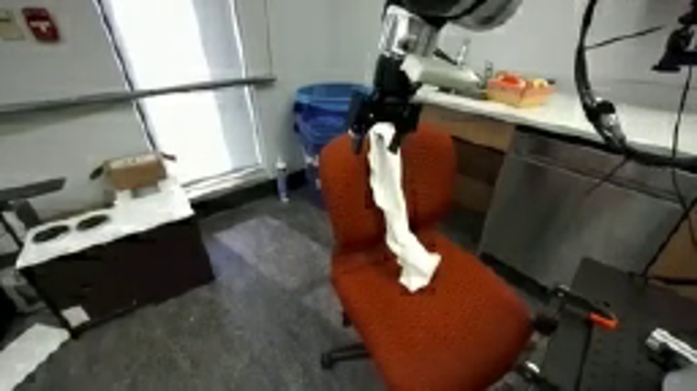
视觉工具实际返回图片 3
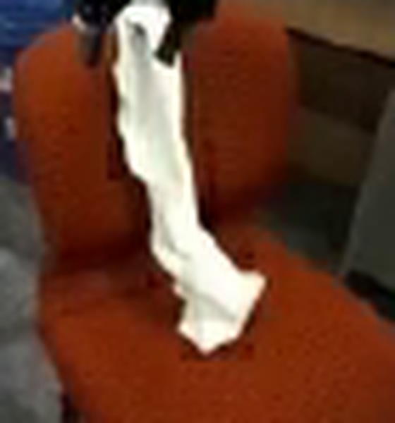
视觉工具实际返回图片 4
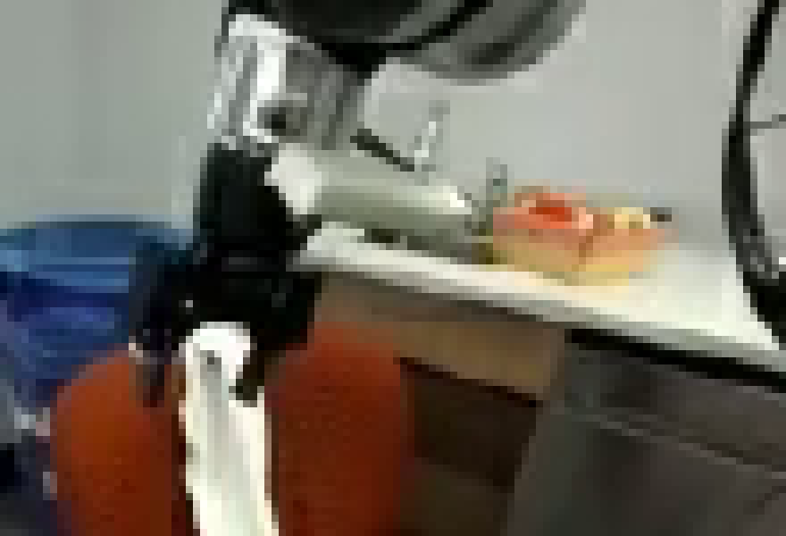
视觉工具实际返回图片 5
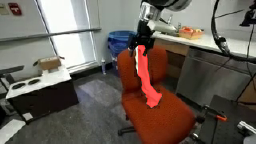
视觉工具实际返回图片 6
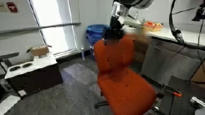
视觉工具实际返回图片 7
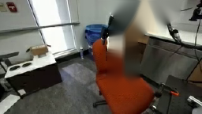
视觉工具实际返回图片 8
视觉工具实际返回图片 9
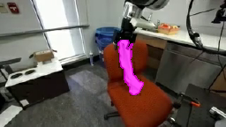
视觉工具实际返回图片 10
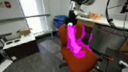
视觉工具实际返回图片 11
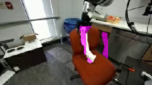
视觉工具实际返回图片 12
视觉工具实际返回图片 13
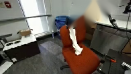
视觉工具实际返回图片 14
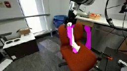
视觉工具实际返回图片 15
视觉工具实际返回图片 16
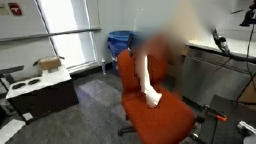
视觉工具实际返回图片 17
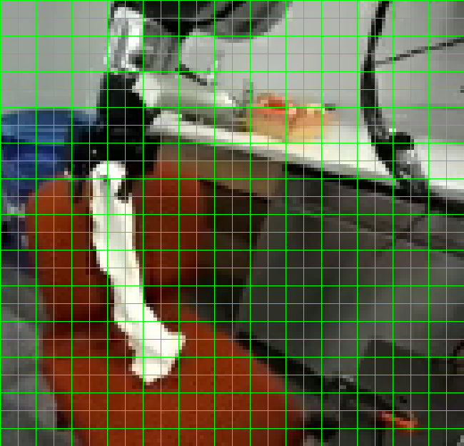
视觉工具实际返回图片 18

视觉工具实际返回图片 19
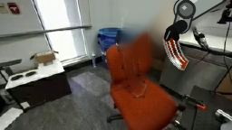
视觉工具实际返回图片 20
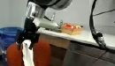
视觉工具实际返回图片 21
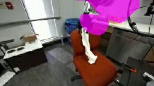
视觉工具实际返回图片 22
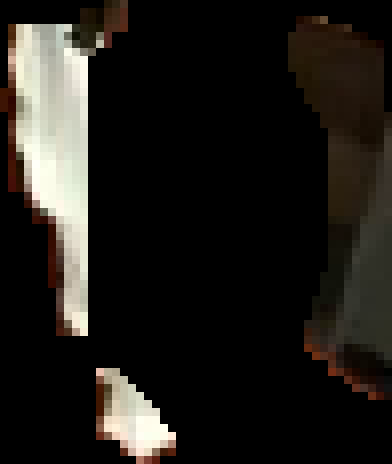
视觉工具实际返回图片 23
视觉工具实际返回图片 24

视觉工具实际返回图片 25
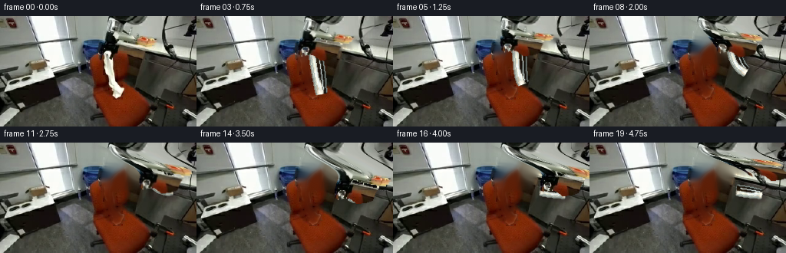
视觉工具实际返回图片 26
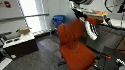
视觉工具实际返回图片 27
视觉工具实际返回图片 28
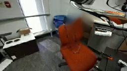
视觉工具实际返回图片 29
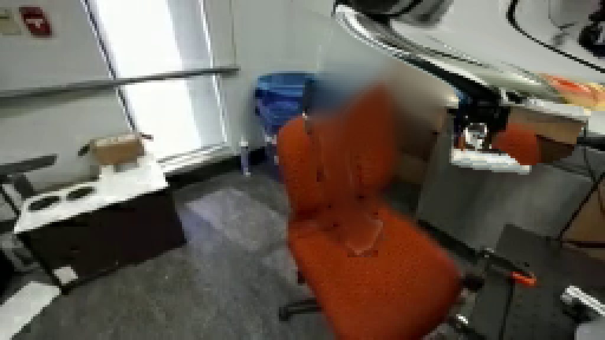
视觉工具实际返回图片 30
视觉工具实际返回图片 31
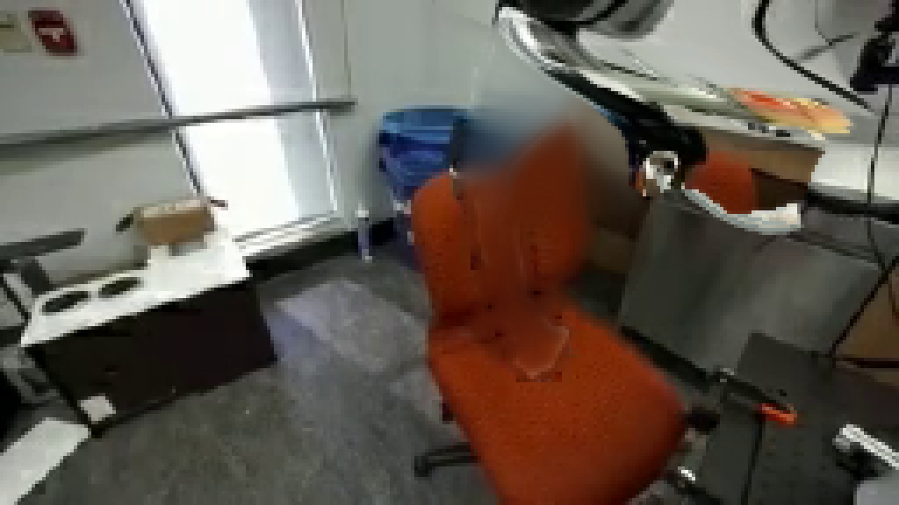
视觉工具实际返回图片 32
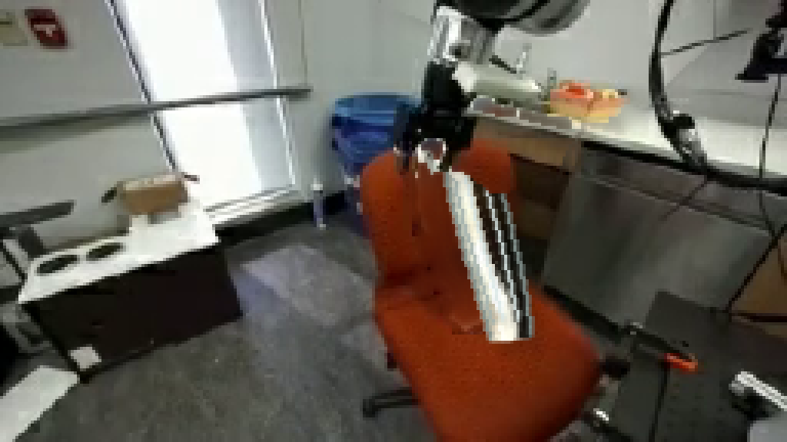
视觉工具实际返回图片 33
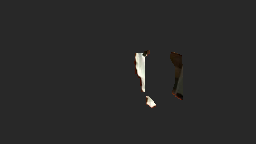
视觉工具实际返回图片 34
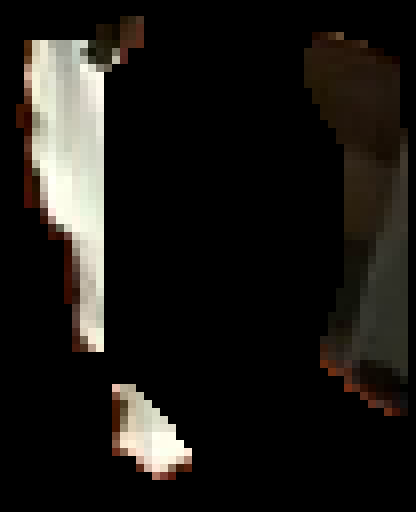
视觉工具实际返回图片 35
视觉工具实际返回图片 36
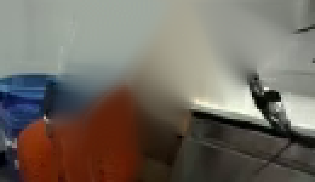
视觉工具实际返回图片 37
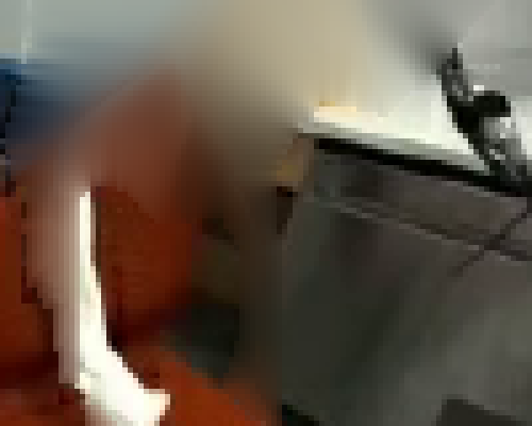
视觉工具实际返回图片 38
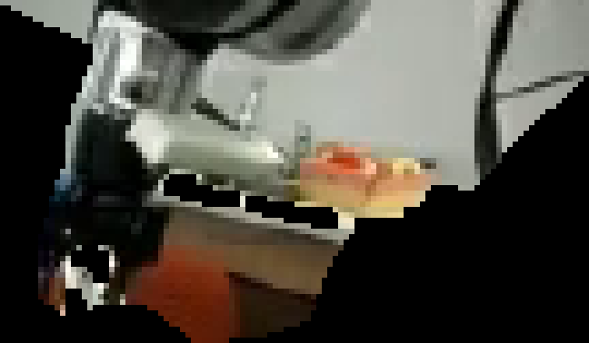
视觉工具实际返回图片 39
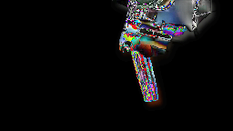
视觉工具实际返回图片 40
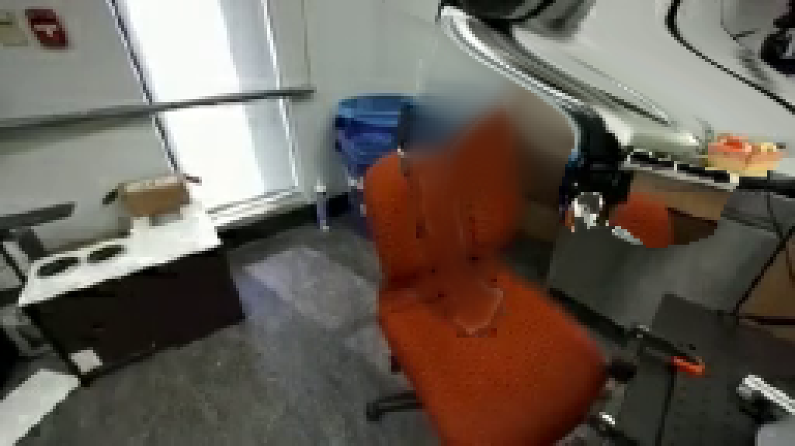
视觉工具实际返回图片 41
视觉工具实际返回图片 42
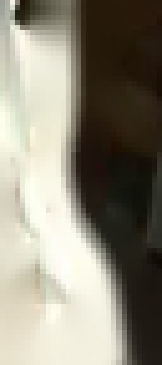
视觉工具实际返回图片 43
视觉工具实际返回图片 44
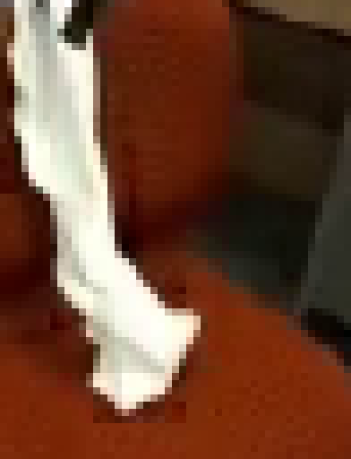
视觉工具实际返回图片 45
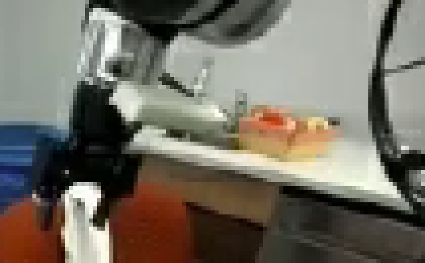
保存候选 3 份；完成命令 46 次；可验证图片返回 45 张。原始 API 响应与完整日志保留在本地。